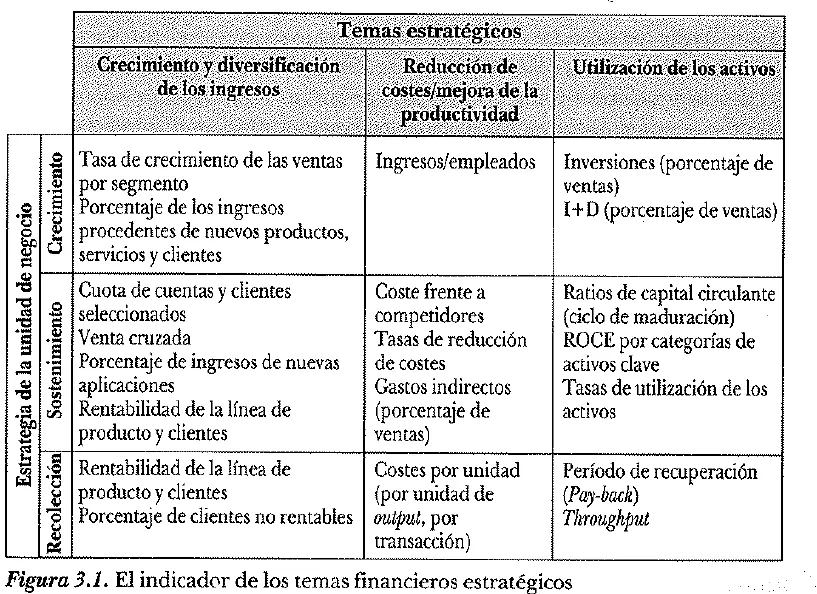
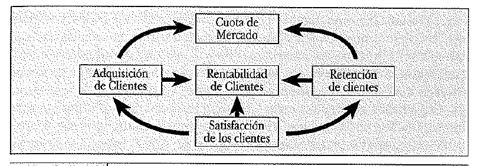
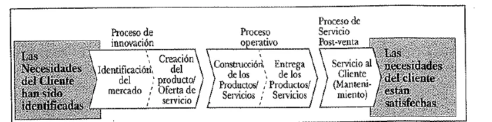
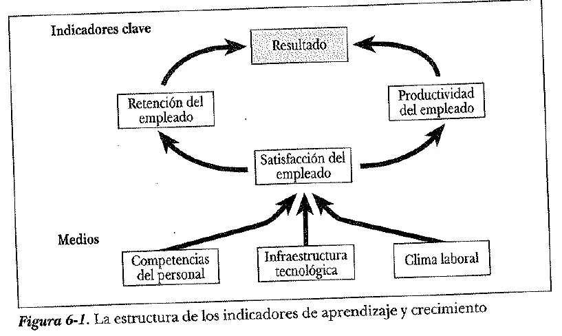
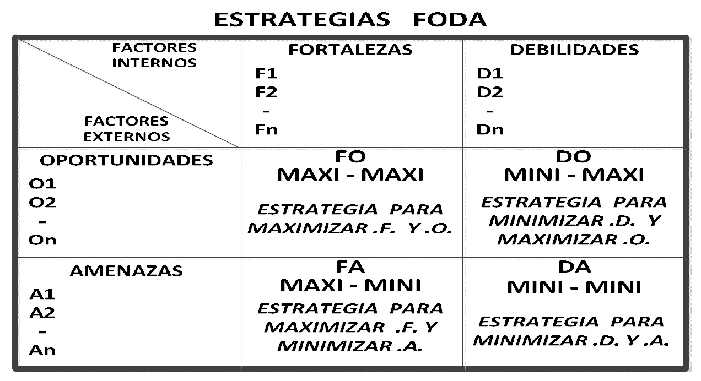
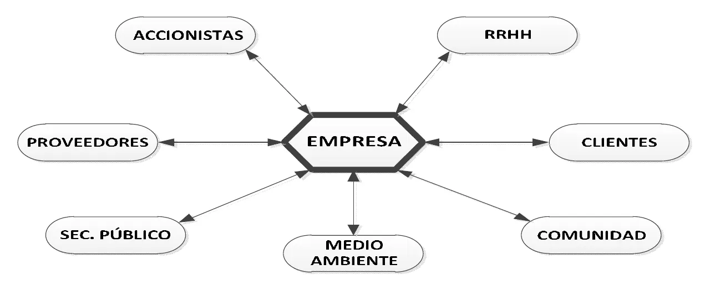

Final
Es el mismo oficio del parcial sobre un caso entero. Acá está qué se pidió en cada final y la teoría que se suma.
Resumen no juzgado. Todavía nadie evaluó si alcanza para estudiar solo con esto.
Cómo viene el examen
Revisé cuatro finales, del 28/06/2023, 09/03/2015, 05/08/2013 y 25/02/2013. Solo el de 2023 es de los nuevos, y su fecha sale del nombre del archivo. Los otros la traen impresa.
Todo lo del parcial entra acá. La base es cursograma, DD, reportes e indicadores. Esta página suma lo que aparece solo en los finales.
| Tipo de consigna | 2023 | 2015 | 08/2013 | 02/2013 |
|---|---|---|---|---|
| Cursograma (siempre la primera) | Sí | Sí | Sí | Sí |
| DD de un almacén, documento o informe | 1 | 5 | 4 | 2 |
| Formato o diseño de planilla o pantalla | Con el reporte | 1 | 1 | |
| Reporte o listado | 1 | Dentro de los DD | 2 | 1 |
| Indicador a diseñar y cuantificar | 2 | 2 | 3 | 4 |
| Mejoras o preguntas de criterio sobre el caso | 2 | 2 | Dentro de los indicadores | |
| Otras a resolver sobre el caso | 1 | |||
| Teoría | No | 1 | 1 | 1 |
| Total de consignas | 7 | 13 | 11 | 10 |
Con un solo final nuevo no se puede decir qué es lo habitual hoy. El de 2023 es bastante más corto y no trae teoría, pero puede ser casualidad. Prepará las dos cosas.
Casos que se tomaron
| Final | Caso |
|---|---|
| 28/06/2023 | Gestión de pedidos de una empresa de electricidad |
| 09/03/2015 | Gestión de una planta de depósitos |
| 05/08/2013 | Gestión de presupuesto de una fábrica de puertas y ventanas |
| 25/02/2013 | Administración de gestión de la calidad |
La fecha del final de 2015
El archivo del Drive se llama 2015-09-03, pero la hoja dice 09.03.2015. Lo tomo como 9 de marzo, que es el formato que usan los otros exámenes de esa época.
Teoría que se tomó en finales
- 2015: «Mencionar 6 Recursos importantes de los cuales a partir de su disminución aumenta la Productividad.» Está en Consumo de recursos.
- 08/2013: «Tablero de Kaplan y Norton: Mencione 6 Items que conforman la Estructura de los Indicadores de Aprendizaje y Crecimiento.» Está en Aprendizaje y crecimiento.
- 02/2013: «Procedimientos: Ventas a Crédito. Controles sobre el contenido de la información almacenada: Ventas registradas pero no despachadas. Análisis y detección de la misma.» El Drive no trae el apunte con el que se contesta. Mirá Control interno.
El Cuadro de Mando a fondo
Sale de los capítulos 3 a 6 de El Cuadro de Mando Integral, de Kaplan y Norton. La versión corta está en el parcial.
Perspectiva financiera
El cuadro debe contar la historia de la estrategia, empezando por los objetivos financieros a largo plazo (página 59). Para el libro, los objetivos financieros representan el objetivo a largo plazo de la organización, que es proporcionar rendimientos superiores basados en el capital invertido (página 74).
Las medidas y los objetivos financieros juegan un papel doble. Definen la actuación financiera que se espera de la estrategia, y sirven como los objetivos y medidas finales de todas las demás perspectivas (página 60). El libro advierte que un único objetivo financiero, igual para todas las unidades de negocio, difícilmente sea apropiado, porque cada una puede seguir una estrategia distinta (páginas 59 y 60).
Los objetivos financieros cambian según la fase del negocio (páginas 60 a 62).
| Fase | Cómo es | Objetivo financiero general |
|---|---|---|
| Crecimiento | La más temprana. Productos con potencial de crecimiento, mucha inversión | Porcentaje de crecimiento de ventas en mercados, grupos de clientes y regiones seleccionados |
| Sostenimiento | Atrae inversión pero se le exigen excelentes rendimientos | Rentabilidad: beneficios de explotación, margen bruto, ROCE, valor añadido económico |
| Cosecha o recolección | Madura. Se recolectan las inversiones anteriores | Aumentar al máximo el retorno del cash flow y reducir necesidades de capital circulante |
La fase no es fija. Lo normal es que con los años una unidad pase de crecimiento a sostenimiento, después a cosecha y al final a la salida. Un cambio tecnológico, de mercado o de regulaciones también puede devolverla al crecimiento. Por eso los objetivos financieros de todas las unidades se revisan periódicamente, por lo menos una vez al año (páginas 62 y 63).
Para cada fase hay tres temas financieros que impulsan la estrategia (página 64). Son el crecimiento y la diversificación de los ingresos, la reducción de costes y mejora de la productividad, y la utilización de los activos. Se les suma la gestión del riesgo (página 63).
| Tema | Qué implica (páginas 64 a 73) | Cómo lo abre el libro |
|---|---|---|
| Crecimiento y diversificación de los ingresos | Expandir la oferta de productos y servicios, llegar a nuevos clientes y mercados, llevar la variedad hacia una oferta de mayor valor añadido y cambiar los precios | Nuevos productos, nuevas aplicaciones, nuevos clientes y mercados, nuevas relaciones, nueva variedad de productos y servicios, nueva estrategia de precios |
| Reducción de costes y mejora de la productividad | Rebajar los costes directos de productos y servicios, reducir los indirectos y compartir recursos comunes con otras unidades de negocio | Aumento de la productividad de los ingresos, reducción de los costes unitarios, mejora del mix de canales, reducción de los gastos de explotación |
| Utilización de los activos | Reducir el capital circulante que hace falta para un volumen y una diversidad de negocio dados, usar más los activos fijos y vender los que rinden poco | Ciclo de caja, mejora de la utilización de los activos |
El ciclo de caja mide la eficiencia del capital circulante (página 71, figura 3.2). Representa el tiempo que necesita la empresa para convertir los pagos a los proveedores en cobros de los clientes:
Algunas empresas operan con ciclo negativo, porque les pagan a los proveedores después de cobrarles a los clientes (página 72).
Gestión del riesgo. Una gestión financiera eficaz cuida el riesgo igual que los rendimientos. Por eso muchas empresas suman a la perspectiva financiera un objetivo de riesgo, por ejemplo diversificar las fuentes de ingresos. Es un objetivo adicional que complementa cualquier estrategia de rentabilidad (página 63).

Perspectiva del cliente
Primero hay que elegir los segmentos. La esencia de la estrategia también exige elegir lo que no hay que hacer (página 77).
Grupo de indicadores centrales (páginas 80 y 81):
| Indicador | Qué mide |
|---|---|
| Cuota de mercado | La proporción de ventas en un mercado dado, en número de clientes, dinero gastado o unidades vendidas |
| Incremento de clientes | La tasa a la que la unidad atrae o gana nuevos clientes o negocios |
| Retención de clientes | La tasa a la que la unidad retiene o mantiene las relaciones existentes |
| Satisfacción del cliente | El nivel de satisfacción según criterios de actuación específicos dentro de la propuesta de valor |
| Rentabilidad del cliente | El beneficio neto de un cliente o segmento, después de los gastos para mantenerlo |

El libro separa dos conjuntos de medidas para esta perspectiva (página 80). El primero es este grupo central, genérico para casi todas las empresas. El segundo son los inductores de la actuación, los diferenciadores de los resultados del cliente. Responden a la pregunta «¿Qué es lo que la empresa ha de entregar a sus clientes para alcanzar un alto grado de satisfacción, retención, adquisición y, por último, cuota de mercado?». Son las propuestas de valor, que siguen más abajo.
Lo que el libro agrega de cada indicador central (páginas 81 a 85):
- Cuota de mercado. Con clientes concretos se puede medir una segunda cuota, la de las compras de esos clientes. Mide qué parte de todo lo que esos clientes compran en un período se lleva la empresa.
- Retención. Además de mantener a los clientes, muchas empresas miden su fidelidad con el porcentaje de crecimiento del negocio con los clientes existentes.
- Incremento. Se mide por el número de clientes nuevos o por las ventas totales a ellos. También sirven la tasa de conversión (clientes nuevos sobre peticiones prospectivas) y el coste de cada cliente nuevo.
- Satisfacción. Da feedback sobre lo bien que lo hace la empresa. Solo cuando los clientes califican su compra como completa o extremadamente satisfactoria se puede contar con que vuelvan a comprar. Se mide con encuestas por correo, entrevistas telefónicas o personales. El coste sube de la primera a la tercera, y también la tasa de respuestas.
- Rentabilidad. Tener éxito en las otras cuatro no garantiza tener clientes rentables. Una forma fácil de tener clientes muy satisfechos es vender muy barato. Por eso se mide también el beneficio que dejan.
La figura 4.2 cruza los segmentos elegidos con la rentabilidad del cliente (página 85):
| Clientes | Rentables | No rentables |
|---|---|---|
| Segmento seleccionado | Retener | Transformar |
| Segmento no seleccionado | Analizar viabilidad | Eliminar |
El libro no es parejo con esta lista
La lista de la página 80 pone cuota, incremento, adquisición, satisfacción y rentabilidad. La tabla de la figura 4.1, en la página 81, pone retención en lugar de adquisición. Y el diagrama usa adquisición y retención, sin incremento. Uso la tabla, porque define cada uno. Si te la piden, nombrá los que estudió tu comisión.
Propuesta de valor. Son los atributos que la empresa suministra para crear fidelidad y satisfacción en los segmentos elegidos. Es el concepto clave para comprender los inductores de la satisfacción, el incremento, la retención y la cuota de mercado. Se organizan en tres categorías (página 86):
- Los atributos de productos o servicios: funcionalidad, precio y calidad, y en la figura 4.3 también el tiempo.
- La relación con los clientes: la entrega, el plazo de respuesta y la sensación de comprar a esa empresa.
- Imagen y prestigio: los factores intangibles que atraen a un cliente.
La figura 4.3 lo pone como un modelo genérico (página 87):
Casi todas las propuestas de valor que vieron los autores incorporan indicadores de tiempo de respuesta, calidad y precio (página 97). El apéndice del capítulo los desarrolla (páginas 98 a 104):
- Tiempo. Responder rápido y en forma fiable a una solicitud. También importa la puntualidad de la entrega y el tiempo para llevar al cliente un producto nuevo.
- Calidad. Se mide por la incidencia de defectos que ven los clientes, las devoluciones, las reclamaciones y las garantías. La entrega puntual también es una medida de calidad, en la dimensión del tiempo.
- Precio. Siempre importa. Se sigue con los precios de venta netos contra la competencia o con el porcentaje de licitaciones ganadas. El libro distingue precio bajo de coste bajo para el cliente, que suma lo que le cuesta comprar y usar el producto.
Estas medidas del resultado tienen algunos defectos de las financieras. Son históricas, y los empleados no saben cómo andan con la satisfacción o la retención hasta que es tarde para corregir (páginas 97 y 98).
Perspectiva del proceso interno
Los directivos identifican los procesos más críticos para los objetivos de accionistas y clientes. Es típico hacerlo después de formular las perspectivas financiera y del cliente (página 105).
El libro distingue esto de los sistemas tradicionales. Esos miran los procesos existentes y por departamento. El CMI puede revelar procesos enteramente nuevos, en los que la empresa debe sobresalir (páginas 106 y 107).

| Proceso | Qué es (páginas 110 a 120) |
|---|---|
| Innovación | La onda larga de creación de valor. Investiga las necesidades, emergentes o latentes, de los clientes y crea los productos o servicios que las satisfacen |
| Operaciones | La onda corta. Empieza con la recepción de un pedido y termina con la entrega del producto o servicio. Recalca la entrega eficiente, consistente y oportuna de los productos y servicios existentes a los clientes existentes |
| Servicio posventa | Atender y servir al cliente después de la venta o entrega. Incluye garantía y reparaciones, tratamiento de defectos y devoluciones, y procesamiento de pagos, como la administración de tarjetas de crédito |
Innovación. Tiene dos componentes (páginas 112 y 113). El primero es la investigación de mercado, para conocer su tamaño, las preferencias de los clientes y los precios objetivo. El segundo es el diseño y desarrollo del producto o servicio. Ahí el grupo de I + D hace investigación básica, para productos radicalmente nuevos, investigación aplicada, para explotar la tecnología existente en productos de nueva generación, y desarrollo, para llevar los nuevos productos al mercado.
Entre sus indicadores, el libro da el porcentaje de ventas de los productos nuevos, la introducción de productos nuevos frente a la competencia y a lo planeado, y el tiempo para desarrollar la siguiente generación (página 115). Y desarrolla el tiempo del punto de equilibrio (TPE). Mide el tiempo que pasa desde que empieza el desarrollo de un producto hasta que se introdujo y generó el beneficio suficiente para devolver la inversión (página 116). Junta en un solo indicador la recuperación de la inversión, la rentabilidad y el tiempo. El libro aclara que funciona mejor para señalar un comportamiento deseado que como medida del resultado (página 117).
Operaciones. Además de tiempo, calidad y coste, se pueden medir la flexibilidad y las características propias de productos o servicios que crean valor para el cliente (página 120).
Posventa. Se miden con los mismos indicadores de tiempo, calidad y coste de las operaciones (página 121). El tiempo, desde la solicitud del cliente hasta la solución final. El coste, la eficiencia de los recursos usados. Y la productividad, el porcentaje de solicitudes que se resuelven en una sola visita.
Indicadores del proceso operativo. Para las operaciones, los indicadores son de calidad, tiempo de ciclo y costes (páginas 119 y 138). El apéndice del capítulo los desarrolla (páginas 130 a 138).
Tiempo. El ciclo puede empezar cuando se recibe el pedido, cuando se programa, cuando se piden las materias primas, cuando llegan o cuando arranca la producción. Puede terminar cuando termina la producción, cuando queda en existencias, cuando se envía o cuando lo recibe el cliente. La elección depende del proceso que se quiere acortar (página 131). Para el justo a tiempo, el libro da la eficacia del ciclo de fabricación (ECF) (página 132):
El ratio es menor que 1. En un proceso ideal vale 1, una meta que quizás nunca se alcance pero hacia la que vale la pena avanzar. Todo tiempo que no es de proceso es tiempo perdido, que no añade valor. El ratio sirve también en empresas de servicios (páginas 132 a 134).
Calidad. El libro lista tasas de defectos, producción (productos conformes sobre el total fabricado), desperdicio, chatarra, reprocesos, devoluciones y porcentaje de procesos bajo control estadístico (página 134). Suma las producciones de primer pase, las que terminan todo el proceso a la primera, sin reelaborarse. El éxito de un programa de calidad no se mide por lo que sale después de inspeccionar y rehacer, sino por la reducción en cada fase de los artículos que no cumplen las especificaciones (páginas 135 a 137).
Coste. Los sistemas tradicionales miden el gasto de cada tarea o departamento por separado. El cálculo de costes basado en la actividad (ABC) permite obtener el coste de procesos que usan recursos de varios centros de responsabilidad. Junto con el tiempo y la calidad, da los tres parámetros de los procesos internos importantes (páginas 137 y 138).
Aprendizaje y crecimiento
Proporciona la infraestructura para alcanzar los objetivos de las otras tres. Sus objetivos son los inductores necesarios para conseguir resultados excelentes en ellas (página 139). Tiene tres categorías de variables (página 140):
- Las capacidades de los empleados.
- Las capacidades de los sistemas de información.
- Motivación, delegación de poder (empowerment) y coherencia de objetivos.

La consigna 11 usa el mismo nombre que la figura 6.1, en la página 142 del libro: «La estructura de los indicadores de aprendizaje y crecimiento». Los indicadores clave son los de arriba, los medios son los de abajo.
Dentro del núcleo de indicadores clave, la satisfacción del empleado se considera generalmente el inductor de las otras dos (página 142).
| Indicador clave | Cómo se mide (páginas 143 a 145) |
|---|---|
| Satisfacción del empleado | Encuesta, con una escala de puntaje |
| Retención del empleado | Porcentaje de rotación del personal clave |
| Productividad del empleado | Por ejemplo, ingresos por empleado o valor añadido por empleado |
Lo que el libro agrega de cada uno:
- Satisfacción. Los empleados satisfechos son una condición previa para aumentar la productividad, la rapidez de reacción, la calidad y el servicio al cliente. Se mide con una encuesta anual, o con una mensual a una parte de los empleados elegidos al azar. Puede preguntar por la participación en las decisiones, el reconocimiento por hacer bien el trabajo, el acceso a la información para hacerlo bien, si se los anima a ser creativos y a tomar la iniciativa, el apoyo de los directivos y la satisfacción general con la empresa. Se puntúa de 1 a 3 o de 1 a 5, de «descontento» a «muy satisfecho» (página 143).
- Retención. El objetivo es retener a los empleados en los que la organización tiene un interés a largo plazo. Cualquier salida no deseada es una pérdida en el capital intelectual del negocio (páginas 143 y 144).
- Productividad. Relaciona el resultado producido por los empleados con el número de empleados que lo produjeron. El más sencillo es ingresos por empleado. Tiene límites. Por ejemplo, sube si se reducen empleados o se tercerizan funciones, aunque eso sacrifique capacidades a largo plazo. Por eso se puede medir el valor añadido por empleado, que resta del ingreso los materiales, suministros y servicios comprados afuera, o poner el coste laboral en el denominador (páginas 144 y 145).
Los inductores de esta perspectiva, y cómo los mide el libro (páginas 145 a 157):
| Inductor | Indicadores del libro |
|---|---|
| Capacidades de los empleados | El ratio de cobertura del puesto de trabajo estratégico. Sigue el número de empleados calificados para puestos estratégicos concretos, contra las necesidades previstas. Si hace falta una recualificación masiva, también el tiempo para llevar a los empleados a los nuevos niveles de competencia |
| Capacidades de los sistemas de información | El ratio de cobertura de la información estratégica. Evalúa la información disponible contra las necesidades previstas. Por ejemplo, el porcentaje de procesos con feedback disponible sobre calidad en tiempo real, tiempos de ciclo y coste, o el de empleados de cara al público con acceso en línea a la información sobre los clientes |
| Motivación, delegación de poder y coherencia de objetivos | Sugerencias por empleado y sugerencias puestas en práctica. Indicadores de mejora, como la media vida, que mide el tiempo para que la actuación de un proceso mejore un 50 %. Para la coherencia, el porcentaje de la alta dirección y del personal expuestos al CMI, y el de empleados con objetivos personales alineados con el CMI y que los alcanzaron. También indicadores de la actuación de equipo |
La figura 6.3 distingue tres escenarios de recualificación según cuánta plantilla la necesita y qué tanto (páginas 146 y 147):
| Escenario | Qué pasa |
|---|---|
| Recualificación estratégica | Una parte concreta de la plantilla necesita un alto nivel de habilidades nuevas y estratégicas |
| Recualificación masiva | Una gran proporción de la plantilla necesita una renovación masiva de su capacitación |
| Elevación del nivel de la competencia | Una parte de la plantilla, grande o pequeña, requiere una mejora de la capacitación clave |
El libro admite que los indicadores de esta perspectiva están menos desarrollados que los de las otras tres. Muchas empresas casi no miden la capacitación, la información estratégica ni la alineación de la organización (páginas 157 y 158). En resumen, los inductores salen de tres fuentes, los empleados, los sistemas y la equiparación de la organización con sus objetivos (página 159).
La figura 6.2 detalla los inductores para situaciones concretas (página 146):
| Competencias del personal | Infraestructura tecnológica | Clima laboral |
|---|---|---|
| Capacitación estratégica | Tecnologías estratégicas | Ciclo de decisión clave |
| Niveles de entrenamiento | Bases de datos estratégicas | Enfoque estratégico |
| Equilibrio de la capacitación | Adquisición de experiencia | Otorgar poder al personal |
| Software propio | Coherencia de objetivos personales con los de la organización | |
| Patentes, copyrights | Moral | |
| Capacidad para el trabajo en equipo |
Productividad, competitividad y recursos
Sale del apunte Indicadores de Gestión, páginas 6 y 7.
Productividad: el enfoque sistémico la define como la relación entre la producción final y los factores productivos utilizados en la producción de bienes y servicios. Se mide porque permite evaluar la cultura del desempeño, definir estrategias y establecer políticas visionarias.
Cómo se eleva, según el apunte (página 6):
- Forjando cultura.
- Entrenando, preparando y exigiendo al talento humano.
- Incorporando mayor valor agregado al producto.
- Con mejores compras, procesos, productos, servicios y ventas.
- Logrando mejores mercados, clientes y desarrollos.
- Mejorando y aprovechando la tecnología, los equipos, la infraestructura y el capital humano.
- Dando lectura y buena comprensión a los indicadores.
Competitividad: la característica de un país, una empresa o un individuo que le permite participar ventajosamente en un mercado no controlado. Para el apunte, «la Productividad es en esencia Competitividad y Competitividad es consecuencia de Productividad».
| Competitividad de un país | De la empresa | Individual |
|---|---|---|
| Infraestructura moderna | Alta calidad de productos y servicios | Eficiente |
| Recursos humanos capacitados y entrenados | Alta productividad | Capacitado y actualizado |
| Políticas coherentes de estímulo | Eficiencia | Que agregue valor |
| Recursos humanos capacitados | Productivo en la unidad de desempeño | |
| Insumos de primera calidad | ||
| Excelentes mecanismos de comercialización |
Consumo de recursos
Cada vez más, la eficiencia se mide por la disminución de los recursos. Los recursos consumidos en cualquier operación de trabajo están entre los indicadores más usados. Si disminuyen los recursos que usa un proceso, aumenta la productividad (apunte, página 7).
Mencionar 6 recursos importantes de los cuales a partir de su disminución aumenta la productividadFinal 09/03/2015
El apunte da estos ejemplos:
- Costos utilizados en operaciones de trabajo repetitivo.
- Tiempos utilizados en operaciones de trabajo repetitivo.
- Horas hombre utilizadas en operaciones de trabajo repetitivo.
- Número de horas extras.
- Tiempos de implantación.
- Plazos de tiempo.
- Duración de un ciclo.
- Desgaste de equipos.
- Uso de máquinas y equipamiento.
Fuente: Indicadores de Gestión, apunte de la cátedra, página 7.
Para el apunte, los recursos más utilizados en las organizaciones son los humanos, los financieros, los materiales y el tiempo. Los expresa en un modelo que a cada recurso le suma el tiempo (página 7):
| Modelo | Recurso |
|---|---|
| Man | Recursos humanos + tiempo |
| Money | Recursos financieros + tiempo |
| Materials | Materiales + tiempo |
| Machines | Máquinas + tiempo |
| Methods | Métodos + tiempo |
| Management | Administración o gerenciamiento + tiempo |
Matriz FODA
Herramienta de análisis y técnica de planeamiento estratégico (apunte, páginas 17 a 20). Se puede aplicar a situaciones, individuos, productos, empresas, negocios, mercadotecnia, comunicaciones y otros. Permite visualizar la situación actual de la organización y obtener un diagnóstico preciso, porque explora las interacciones entre las características de la institución y el entorno en que está inmersa.
| Son | Se puede actuar | |
|---|---|---|
| Fortalezas | Capacidades especiales con que cuenta la empresa, que le dan una posición privilegiada frente a la competencia | Internas, directamente |
| Debilidades | Factores que provocan una posición desfavorable frente a la competencia: recursos de los que se carece, habilidades que no se poseen, actividades que no se desarrollan positivamente y otras | Internas, directamente |
| Oportunidades | Factores positivos, favorables y explotables, que se deben descubrir en el entorno y que permiten obtener ventajas competitivas | Externas, solo modificando lo interno |
| Amenazas | Situaciones del entorno que pueden atentar incluso contra la permanencia de la organización | Externas, solo modificando lo interno |
En el análisis estratégico, la empresa selecciona cuáles son las fuerzas con que cuenta y cuáles las debilidades que traban sus objetivos estratégicos. Al cruzarlas salen cuatro alternativas conceptualmente diferentes (página 20).

En criollo
FO usa lo que tenés bueno para aprovechar lo que aparece. DO arregla lo que te falla para no perderte lo que aparece. FA usa lo bueno para defenderte. DA es apagar el incendio, cuando te falla algo justo donde te pega el entorno.
Los ejemplos que da el apunte (páginas 18 y 19):
| Tipo | Ejemplos |
|---|---|
| Fortalezas | Buen ambiente laboral. Proactividad en la gestión. Conocimiento del mercado. Buenos recursos financieros. Buena calidad del producto final. Posibilidad de acceder a créditos. Equipamiento de última generación. Experiencia de los recursos humanos. Recursos humanos motivados y capacitados. Procesos técnicos y administrativos de calidad. Características especiales del producto. Cualidades de alto nivel del servicio |
| Debilidades | Salarios bajos. Falta de capacitación. Equipamiento obsoleto. Problemas con la calidad. Reactividad en la gestión. Precaria situación financiera. Incapacidad para detectar fallas. Capital de trabajo mal utilizado. Deficientes capacidades gerenciales. Poca capacidad de acceso a créditos. Falta de motivación de los recursos humanos. Producto o servicio sin características diferenciadoras |
| Oportunidades | Regulación a favor. Competencia débil. Mercado mal atendido. Necesidad del producto. Inexistencia de la competencia. Tendencias favorables en el mercado. Fuerte poder adquisitivo del segmento meta |
| Amenazas | Conflictos gremiales. Regulación desfavorable. Cambios en la legislación. Competencia muy agresiva. Incremento de precios de insumos. Segmento del mercado contraído. Tendencias desfavorables en el mercado. Competencia consolidada en el mercado |
Responsabilidad social empresaria
La Responsabilidad Social Empresaria «es el Compromiso continuo de la Empresa de contribuir al Desarrollo Económico Sostenible, mejorando la calidad de vida de sus Recursos Humanos, la Comunidad con la cual está comprometida y la Sociedad en general» (apunte, página 20).
Como concepto, es una gestión de negocios que propone que las empresas modernas se preocupen por generar valor en la comunidad donde se desarrollan, tanto a nivel interno como externo (página 20).
Los stakeholders son los actores involucrados. Son los grupos o instituciones que pueden impactar o ser impactados por las actividades de la empresa, y cada una define los suyos según la naturaleza de su negocio (página 21).
Ser socialmente responsable implica ser consciente del efecto que nuestros actos pueden ocasionar a cualquier individuo o grupo social (página 21).

El apunte da estos indicadores para cada dimensión (páginas 21 y 22):
| Dimensión | Indicadores |
|---|---|
| RRHH y colaboradores | Evaluación de resultados y competencias del trabajador. Remuneraciones mínimas y máximas que se abonan en la empresa. Formación de los trabajadores. Programas de igualdad de oportunidades. Política de salud y seguridad en el trabajo. Representación formal de los trabajadores en la gestión |
| Proveedores | Condiciones de pago con proveedores. Buenas prácticas con los proveedores. Responsabilidad comunicativa del producto. Selección, evaluación y asociación con proveedores. Porcentual de satisfacción de los proveedores. Inversión en desarrollo de proveedores |
| Clientes | Satisfacción de clientes. Responsabilidad sobre el producto. Estudios e investigaciones técnicas sobre productos. Retención y fidelización de clientes. Impacto por marketing social. Reclamo de productos y servicios |
| Comunidad | Valor económico y social generado. Vinculación con la comunidad. Gestión de impacto en la comunidad. Premios y reconocimientos por actuaciones responsables. Montos invertidos en programas para la comunidad. Número de alianzas con organizaciones civiles o gobierno para programas con la comunidad |
| Accionistas | Valor económico generado. Porcentual de satisfacción de los accionistas sobre la gestión de la empresa. Dividendos otorgados por acciones de todo tipo. Facturación media por trabajador |
| Medio ambiente | Consumos de energía y agua. Condiciones ambientales en el lugar de trabajo. Residuos producidos. Sistema de gestión medioambiental. Reciclaje. Emisión de gases y efluentes |
| Sector público | Relaciones con el poder político o de lobby. Ayudas del gobierno. Inversiones y servicios que dan un beneficio público. Cumplimiento de la legislación y convenios internacionales del sector industrial y empresario |
No lo vi tomado en ningún examen del Drive. Está en el apunte, así que no lo dejes en cero.
Inventarios
La guía de práctica de la cátedra da dos cosas de inventarios.
Precio promedio ponderado (PPP). Es el criterio de valuación que usa, y lo define así: «PPP = Monto total en $ / cantidad de unidades» (práctica, ejercicio 1, página 2).
Sale de apuntes de alumnos
Punto de pedido. El ejercicio 2 de la práctica pide «las tres variables a contemplar para la determinación del punto de pedido», pero la guía no las da. El resumen de un alumno lo define como la cantidad en existencia a partir de la cual se solicita la compra, y lo establece como un stock mínimo más un margen de seguridad (página 3).
Resumen de un alumno
Control interno
Solo tenemos el índice
La guía Procedimientos y Técnicas de Control lista los temas, sin desarrollarlos. El apunte que los explica no está en el Drive. No invento su contenido. Si tu comisión lo dio, sumalo.
La guía recorre estos procedimientos:
- Compras mayores y recepción.
- Cuentas a pagar.
- Comercialización y ventas a crédito.
- Facturación a clientes y cuentas a cobrar.
- Cobranzas, también en punto de venta.
- Remuneraciones.
- Administración de inventario de productos terminados.
Para casi todos pide estudiar la secuencia natural del procedimiento con un Arrow Chart. Facturación y cuentas a cobrar no lo llevan. Para compras, cuentas a pagar, ventas a crédito, cobranzas y remuneraciones pide además estos principios y técnicas de control:
- Definición y separación de funciones.
- Análisis de control interno: controles generales.
- Controles del procesamiento electrónico: controles de entrada.
- Controles de programas y de procesos de computación.
- Controles de salida de información.
- Controles sobre la base de datos.
- Controles sobre el contenido de la información almacenada.
Algunos procedimientos suman temas propios. Compras mayores, ventas a crédito, cuentas a cobrar, cobranzas, remuneraciones e inventario de productos terminados agregan paquetes de software integrados. Ventas a crédito suma el gerenciamiento de la gestión de pedidos de clientes y los sistemas integrados de gestión. Facturación trae la transacción de facturación y su gerenciamiento. Cuentas a cobrar, sus salidas típicas y la información para su gerenciamiento. La cobranza en punto de venta, el equipamiento y la información para gerenciar las cobranzas. Remuneraciones e inventario, el gerenciamiento de su gestión, y el inventario, sus propios principios y técnicas de control.
Lo que sí tenés desarrollado son las normas de compras, pagos y producción, en el resumen de un alumno.
Lo que tenés que poder hacer
- Todo lo de la lista del parcial.
- Explicar las fases financieras y los temas de cada perspectiva del CMI.
- Nombrar los ítems de la estructura de aprendizaje y crecimiento.
- Dar ejemplos de recursos cuya disminución aumenta la productividad.
- Armar y leer una matriz FODA.
Quiz del final
Elegí una opción para ver la explicación. Las que dicen «Se tomó» salieron de exámenes reales.
- 1
¿Qué tres procesos abarca el modelo genérico de cadena de valor de la perspectiva del proceso interno?
Son innovación, operaciones y servicio posventa. Crecimiento, sostenimiento y cosecha son las fases de la perspectiva financiera.
- 2
¿En qué fase del ciclo de vida el objetivo principal es aumentar al máximo el retorno del cash flow?
En cosecha el negocio ya está maduro y se quieren recolectar las inversiones anteriores. Crecimiento apunta a ventas y sostenimiento a rentabilidad.
- 3
¿Cuál de estos no es uno de los tres temas financieros que impulsan la estrategia?
La satisfacción de los empleados es un indicador de aprendizaje y crecimiento. Los otros tres son los temas financieros del libro.
- 4
¿En qué tres categorías organiza el libro los atributos de la propuesta de valor?
Son esas tres. Cuota, retención y satisfacción son indicadores centrales, no atributos de la propuesta de valor.
- 5
Dentro del núcleo de indicadores clave sobre los empleados, ¿cuál se considera generalmente el inductor de los otros dos?
La satisfacción del empleado se considera generalmente el inductor de la retención y la productividad.
- 6
Según el libro, ¿cómo se acostumbra a medir la retención de los empleados?
Se mide por medio del porcentaje de rotación del personal clave. Los ingresos por empleado son una medida de productividad.
- 7
En la matriz FODA, ¿qué plantea la estrategia DO?
DO es mini-maxi. Minimiza las debilidades y maximiza las oportunidades.
- 8
¿Qué factores del FODA son internos de la organización?
Fortalezas y debilidades son internas, y se puede actuar directamente sobre ellas. Oportunidades y amenazas son externas.
- 9
¿Cómo define el enfoque sistémico a la productividad?
Es la relación entre producción final y factores productivos. La participación ventajosa en un mercado es la definición de competitividad.
- 10
Según el apunte, ¿qué son los stakeholders?
Son los actores involucrados, y cada empresa define los suyos según la naturaleza de su negocio.
Todavía no respondiste ninguna.